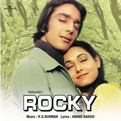
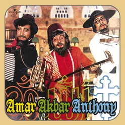

Kya Yahi Pyar Hai
Kishore Kumar,Lata Mangeshkar,R.D.Burman

Humko Tumse Ho Gaya Hai Pyar
Kishore Kumar,Lata Mangeshkar,R.D.Burman,Mohammed Rafi
Pyar Mein Kabhi Kabhi
Shailendra Singh, Lata Mangeshkar
Saagar Kinare
Lata Mangeshkar, Kishore Kumar, R. D. Burman